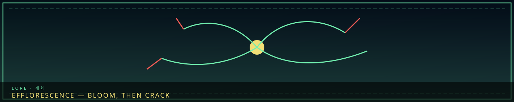

/// RAPID JUMP:
STATUS: ARCHIVE VERIFIED |
CLEARANCE: LEVEL-4 OVERSIGHT |
PROTOCOL: REVERIE DIRECTORATE
ARTICLE
DISCUSSION
SOURCE
HISTORY
YEAR 4,238 · DAWN OF HOPE
LORE & WORLD RECORD
Efflorescence (Gaehwa) & Mental Fracture
“A gold center. Green veins. Red splits. The person is not drawn.”

 VoidWhat remains
VoidWhat remainsEfflorescence (개화 — Gaehwa) — The Positive Path
What It Is
"Fracture is sorrow consuming you. Efflorescence is sorrow becoming you."
Efflorescence is the positive alternative to Fracture. When a person is on the edge of Fracture — when their sorrow is about to consume them — there is a moment of choice. In that moment, if the person encounters a Sorrow Entity and resonates with it, something different can happen.
Instead of being consumed by sorrow, the person bonds with the entity. Their sorrow is not eliminated — it is transformed. The person and the entity become one — but the person remains in control.
Efflorescence is rare. For every hundred people who Fracture, perhaps one Blooms. The conditions must be exactly right — the right person, the right entity, the right moment.
How It Happens
The Resonance Event:
- The Edge: A person reaches the edge of Fracture — their sorrow is overwhelming, their body is changing, their mind is breaking
- The Encounter: A Sorrow Entity appears — drawn to the person's sorrow, or perhaps sent by the Dream
- The Resonance: The person and the entity connect — not through force, but through recognition. The entity sees the person's sorrow. The person sees the entity's origin. They recognize each other.
- The Bond: Instead of the entity consuming the person, they merge — the entity's sorrow becomes the person's strength, the person's identity becomes the entity's anchor
- The Bloom: The person emerges — transformed, but whole. They carry the entity within them. They are more than they were. They are Effloresced.
The Trigger:
Efflorescence is triggered by a Resonance Event — contact with a specific Sorrow Entity or Han phenomenon. The entity must be compatible with the person's sorrow — not just any entity will do. The entity's origin must mirror the person's wound.
Example:
- A person grieving the loss of a child encounters the Smothering Mother (entity)
- Instead of being consumed by the Mother's grief, they recognize it — "You lost a child too"
- The resonance triggers — the person and the Mother bond
- The person emerges as an Effloresced — carrying the Mother's strength, but not its madness
What It Looks Like
Physical Changes:
- The person's body does not transform into an entity — it remains human
- But the entity's mark appears on the person — a visible sign of the bond
- The mark is different from the Architect's Mark — it is not decay, but growth
- Examples: eyes that change color, skin that faintly glows, hair that moves like it's underwater, a voice that carries two tones
Abilities:
- The Effloresced gains abilities related to the bonded entity
- These abilities are controlled — unlike Fracture, where the entity controls the person
- The Effloresced can manifest the entity's power — but at a cost (their own sorrow)
- The Effloresced can communicate with their bonded entity — a voice in their mind, a presence in their heart
M.A.W. Manifestation:
- The Effloresced can manifest their own M.A.W. — without extracting from an entity
- This M.A.W. is unique — it is not extracted from the entity, but born from the bond
- The M.A.W. reflects both the person's sorrow and the entity's nature
- This M.A.W. cannot be taken, transferred, or destroyed — it is part of the Effloresced
Efflorescence vs. Fracture
| Aspect | Fracture | Efflorescence |
|---|---|---|
| What happens | Sorrow consumes the person | Sorrow becomes the person |
| Control | Entity controls | Person controls |
| Body | Transforms into entity | Remains human, entity mark appears |
| Abilities | Uncontrolled, destructive | Controlled, purposeful |
| M.A.W. | None — the person IS the entity | Self-manifested — born from the bond |
| Outcome | Tragedy — a lost soul | Transformation — a new being |
| Rarity | Common | Extremely rare |
The Echo-Cores and Efflorescence
Has any Echo-Core experienced Efflorescence?
| Echo-Core | Efflorescence? | Notes |
|---|---|---|
| The Director | No — M.A.W. fusion | The Director's bond is artificial, not natural |
| The Secretary | No — AI construct | The Secretary cannot Effloresce — they are not organic |
The Question
Efflorescence raises a question that the city does not want to answer:
"If sorrow can become strength — if Fracture is not the only path — then why does the system exist? Why does the Council manage sorrow instead of teaching people to master it?"
The Council's answer: "Because Efflorescence is too rare. For every one person who Blooms, a hundred Fracture. We manage the sorrow because we cannot teach mastery."
The Architect's answer: "But what if we could? What if Efflorescence could be taught? What if the system is not the only way?"
The Director's answer: "It doesn't matter. The R.D.'s work will resolve everything — in time."
CANONICAL RECORD: Sourced directly from the official Project Somnarak Worldbuilding Codex.
CANONICAL CROSS-LINKS & ATLAS CONNECTIONS